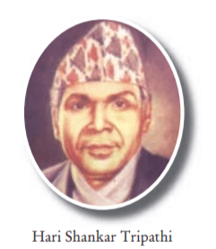

Biography:
Hari Shankhar Tripathi was the 9th governor of Nepal.He was the governor
from August 10, 1990 to Jan 17, 1995 during the ruling period
of King Birendra.Signatue of Hari Shankhar Tripathi can be seen on the
currency of Rs 1, Rs 2, Rs 5, Rs 10, Rs 20, Rs 50, Rs 100, Rs 500 & Rs 1000.